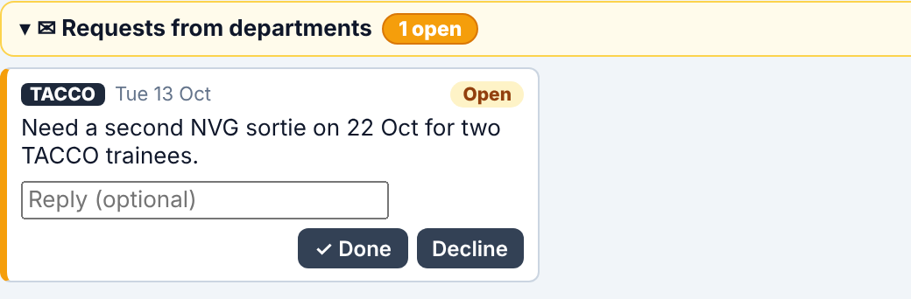

Planning the squadron's flights, squadron events and flight codes
DRAFT · NOT FOR ISSUE
Who this part is for
This part is for the person who keeps the squadron's flight programme. The Master Planner is the one list of flights for 121 SQN. Every department copies its flights from it, the Ops Room builds the day's board from it, and crew see it on their own pages.
If you plan for a department, read the Department planners part instead. You can look at the Master Planner calendar, but you cannot change it.
In this part
QSQuick start
1What the Master Planner does
2Opening the Master Planner
3Reading the calendar
4Planning a day
5Adding a new flight code
6No-flying days
7Squadron events
8Flying restrictions
9Requests from departments
10The Flight Codes page
11The Crew Matrix
12Exporting the programme
13Saving, undo and who sees what
14Questions and problems
LODESTAR · 121 SQN · Guide for dashboard version z152 · Screenshots use demo data only.
QSQuick start
The whole job on one page. Each step has its own section later in this part.
Open the dashboard from the SharePoint folder "Program" and pick Master Planner on the department screen. The calendar opens with your file ready to edit.
Pick the month in the MONTH box at the top left.
Click a day. The day opens in a panel on the right.
Press + Add flight, then pick or type the flight code and type the time as a range, for example 0830-1030. The start time decides the shift (AM, PM or NIGHT) and the range gives the planned hours.
Check the crew tags (P, L, T, S1, S2). They come from the flight code. Click one to change it for this flight only.
For a running change, type the number of sorties (2 or 3) in the Sorties box. Leave it blank for a normal flight.
Mark days with no flying (maintenance, stand-down, public holiday) with the Day status box at the top of the panel.
Add squadron events (meetings, ceremonies, lectures) with + Add squadron event. Always choose who attends: ALL or the crew tags.
Let it save. On SharePoint your changes save by themselves a few seconds after each edit. Save to Excel at the top right saves straight away.
Good to know
Departments see your changes within about 15 seconds. Their planner shows an amber note until they press Copy flights and squadron events from the Master Planner.
Always type a full time range. A flight with only a start time counts as 0 planned hours and shows a red No end time chip.
Nothing you do here changes a department's plan by itself. The department copies the flights into its own file.
1What the Master Planner does
LODESTAR is built from several Excel files in one SharePoint folder. The Master Planner file, Master_Planner.xlsx, holds:
Flights: every planned flight of the year, with its date, time, flight code, sorties, crew and a comment.
Day status: which days have no flying, and why.
Squadron events: ground events for the squadron, such as meetings, ceremonies and lectures.
Flight codes: the one list of flight codes the squadron uses.
Crew matrix: the lowest CAT allowed in each seat on a mission.
Where your plan goes
Who
What they get from the Master Planner
Department planners (SUP 1, SUP 2, TACCO, Loadmaster, Pilot)
Their flights and squadron events on the MASTER and GROUND PROGRAMME rows of their planner, after they press the copy button. A department only gets a flight if the flight's crew tags include it. New flight codes reach their Activities list by themselves the next time they save.
Ops Room
The day's flight board, one row per sortie, with the seats filled from the department plans. No-flying days and flying restrictions show there too.
Crew
Their flights on their own page in the dashboard.
Outside offices
A clean Excel copy of the flights and planned hours, made with Export… (section 12).
Only you can change it
Only the person who opens the Master Planner as their own file can change it. Everyone else sees the same calendar with a padlock (🔒) and cannot edit it. On SharePoint this follows the folder's edit rights.
Words used in this part
Word
Meaning
Flight code
The short name of a kind of flight, for example FLT-2.0, NVG-2.0 or MAS TRG. Each code has a description, default crew and a Mission Type.
Shift
AM, PM or NIGHT. The start time decides it: before 1200 is AM, before 1800 is PM, later is NIGHT.
Crew tags
Which departments fly on a flight: P Pilot, L Loadmaster, T TACCO, S1 SUP 1, S2 SUP 2. No tags means every department.
Sorties
How many sorties one flight is split into. A normal flight is 1. A running change is 2 or 3.
Planned hours
Worked out from the flight's time range. 0830-1030 is 2.0 hours. ATOM stays the record for the hours actually flown.
2Opening the Master Planner
Open the SharePoint folder Program and open the LODESTAR dashboard file.
The screen "Which department are you from?" appears. Each card shows when its file last changed and who changed it (green: today, amber: this week, red: a week or more ago).
Click Master Planner. Your file opens for editing and the other files open beside it so you can see the departments and the Ops Room.
The department screen. The card you opened last is marked "You opened this last".
The calendar is under the Master Planner ▾ tab at the right of the tab bar. That tab has three pages:
The Master Planner menu.
Master Planning: the calendar of flights. This is where you will spend most of your time.
Flight Codes: the list of flight codes (section 10).
Crew Matrix: the CAT each seat needs on a mission (section 11).
To go back to the department screen, click the LODESTAR logo at the top left. ⟳ Refresh (or F5) reads the latest files again without sending you back to that screen.
3Reading the calendar
Master Planning, October. Each day lists its flights and squadron events. The Week column adds up the week.
What you see
What it means
0830H-1030H FLT-2.0
An AM flight: its time range and flight code. Crew tags follow the code when the flight has its own crew.
1400H-1600H FLT-2.0
A PM flight.
2000H-2200H NVG-2.0
A NIGHT flight.
1500 Sqn Meeting
A squadron event. A red ! on it means nobody was chosen to attend (section 7).
NO FLYING · Maintenance
A no-flying day and its reason (section 6).
RESTRICTION
A flying restriction covers this day (section 8).
"3 sorties" next to the date
The number of sorties planned that day. A running change counts each of its sorties.
"+3 more"
The day has more items than fit. Click the day to see them all.
Blue outline
Today.
The line above the calendar gives the month's planned sorties and no-flying days. The strip along the bottom shows this month and, underneath, the whole year: Flights planned, Sorties, Planned flying hrs, Flying days and No-flying days. Flights on a no-flying day are not counted.
Hover over a chip to see its full details. Click any day to open it.
4Planning a day
The day panel: Day status, the day's flights, + Add flight and Squadron events.
Click a day (or the blue + that appears when you point at it). The day opens in a panel on the right.
‹ › in the panel header, or the arrow keys, move to the day before or after.
✕ or Esc closes the panel.
Under Day status, a grey line sums up the day, for example "3 flights · 6.5 H planned".
Add a flight
Press + Add flight. An empty flight appears.
Flight code: click the code box and pick from the list, or type it. Capitals and spaces do not matter: "mas trg" finds MAS TRG. A code that is not on the list starts a new code (section 5).
Time: type the range, for example 0830-1030. The flight moves to the right shift by itself.
Sorties: leave blank for a normal flight (section 4.2).
Crew: check the tags (section 4.3).
Comment: optional, for example "Check rides" or "Long range". Departments and the Ops Room see it.
To remove a flight, press the red ✕ in its header.
4.1 Times and planned hours
A flight in the panel. The green chip is the planned hours from the time range.
Planned hours always come from the time range you type. There is no fixed number of hours per flight code.
0830-1030 is 2.0 hours. An H after the times (0830H-1030H) is fine.
2200-0100 ends the next day and is 3.0 hours. The panel says "ends next day".
Only a start time (0900) counts as 0 hours and shows a red No end time chip.
A range of 0 hours or over 12 hours shows a red Check time chip and counts as 0. Check for a typing mistake.
Under the boxes you see the planned hours, the code's description, its Mission Type and the number of sorties when it is more than one.
4.2 Running changes (Sorties)
A running change is one flight with one time range covering the whole thing and the number of sorties in the Sorties box (2 or 3). Do not enter it as two separate flights.
The planned hours are the full time range. 0800-1100 with 2 sorties is 3.0 hours.
The Ops Room shows one row per sortie, so each crew gets its own row.
The calendar and the totals count each sortie.
4.3 Crew tags
The tags say which departments fly on the flight: P Pilot, L Loadmaster, T TACCO, S1 SUP 1, S2 SUP 2.
Faded tags come from the flight code's default crew. "all crew" means the code has no default, so every department flies.
Click a tag to switch it on or off for this flight only. The tags then show in colour and no longer follow the flight code.
A department only gets the flight on its planner if its tag is on (or if no tag is on).
Tip
Set the usual crew once on the flight code (section 10), and only change tags on the odd flight that differs.
5Adding a new flight code
Typing a code that is not on the list opens the green New code panel.
You can create a flight code while planning, without leaving the calendar.
Type the new code in a flight's code box and press Tab or click away.
A green panel New code opens. Fill in:
Crew by default: the departments that normally fly it. Leave all off for every department.
Mission Type: for example GEN, OPS or MAS TRG. The Crew Matrix (section 11) uses it, so spell it exactly as the matrix does.
Description (optional).
Press Add code. The code goes on the Flight Codes list and the flight uses it.
Cancel, or clearing the box, changes nothing.
Departments get the new code by themselves: it is added to their Activities list the next time they save.
One code, any length
Hours come from the time range, so one code covers every length of the same kind of flight. For example, one MAS code can replace MAS3, MAS4 and MAS6. Type the time range and the hours follow.
6No-flying days
A day set to Maintenance. Squadron events can still be planned on it.
Use the Day status box at the top of the day panel. Choose a reason such as Maintenance, Stand-down or Public Holiday. The box turns red and the calendar day is striped with the reason.
Choose Flying day to undo it.
Flights already on that day are kept but are greyed out. They are not counted, and they do not reach the departments or the Ops Room while the day is set to no flying. Remove them if they are cancelled for good.
Squadron events still work on a no-flying day.
The reasons in the list come from the Day Status list in the Master Planner file.
7Squadron events
Squadron events are ground events for the squadron: meetings, ceremonies, lectures, sports. They show as green chips on the calendar and on each department's GROUND PROGRAMME row. They are listed under Squadron events in the day panel (see the picture in section 4).
Press + Add squadron event.
Type or pick the activity (for example "Sqn Meeting") and the time.
Choose who attends: ALL for every department, or the crew tags of the departments that attend.
Add a comment if useful, such as the place.
Always choose who attends
A new event starts with nobody chosen and shows a red NO CREW. Unlike a flight, an event with no tags does not mean everyone: no department gets it until you pick ALL or the tags.
8Flying restrictions
A flying restriction is a short notice for a range of dates, for example "No low flying in Area Echo". It shows as a red banner on the Ops Room and as a RESTRICTION tag on the calendar days it covers.
The day panel lists the restrictions for that day under Flying restriction, with who added them.
Restrictions are kept in the Ops Room file, so they are added and changed in the Ops Room (+ Restriction). If you can only view the Ops Room file, the panel says so.
If you also have edit rights on the Ops Room file, the panel shows + Add flying restriction, ✎ (change) and ✕ (remove).
9Requests from departments
Departments can send you short notes, for example asking for an extra sortie. Open requests show in a yellow bar above the calendar.

An open request from TACCO.
Read the request. Make the change on the calendar if you agree.
Type a short reply if useful (optional).
Press ✓ Done or Decline. The department sees your answer and reply. Reopen undoes the answer.
Click the bar's title to fold or open the list. Answered requests stay in the list, after the open ones.
10The Flight Codes page
Master Planner ▾ → Flight Codes. Every flight code the squadron uses is kept here, one per row.
The Flight Codes page.
Column
What to type
Code
The short name used on the calendar. Keep each code unique.
Description
A plain description. Departments see it in their planner.
Crew
The default crew tags, with spaces between them, for example P T S2. Blank means every department.
Mission Type
For example GEN, OPS or MAS TRG. Used by the Crew Matrix and the currency rules.
Syllabus tag
Optional. Narrows the syllabus items the departments are offered for this code.
Renaming a code: you are asked whether to change the flights that use it. Answer OK to update them all.
Retiring a code: just stop using it on new flights. Leave the row in place. Departments keep it, so their old plans still count it.
Do not leave an empty row in the middle of the list. Codes below a gap do not appear in the Excel drop-down, and the page warns you.
Duplicate codes are listed in a warning.
11The Crew Matrix
Master Planner ▾ → Crew Matrix. The matrix gives the lowest CAT allowed in each seat (AC, Co-pilot, LM, TACCO, SUP 1, SUP 2) for each mission.
The Crew Matrix page (built-in matrix, before the sheet is made).
A flight is checked when its flight code's Mission Type matches a mission in the matrix. Other flights are not checked. The bottom line of the page lists which codes use each mission, in amber when none do.
A crew passes when it fits any one row of its mission. Seats nobody is planned in yet are not counted.
When the planned crew fits no row, the flight card, the department planners and the Ops Room show a CREW MATRIX warning. It only warns and never blocks a plan.
Changing the matrix
Press Make the Crew Matrix sheet in the Master Planner file once, then save. The file gets a Crew Matrix sheet holding the matrix shown on the page.
From then on, change the matrix in Excel on that sheet: change a letter, add a row, or add a new mission (and use the same name as the Mission Type on its flight codes). Save the Excel file.
The page and every warning follow the sheet within about 15 seconds.
12Exporting the programme
Use Export… at the top right of Master Planning to give an outside office a clean Excel copy of the flight programme.
The Export dialog.
Choose the dates in From and To. They start as the month on screen.
Untick any flight code you want to leave out. It leaves both the rows and the totals. The dashboard remembers your ticks.
Check the line under the list (for example "44 flights, 92.5 planned hours").
Press Export. An Excel file downloads.
The file has one Calendar sheet: a title, each month as a calendar with every flight and its hours, the day and week totals, no-flying days with their reason, and a month total. It prints on landscape A4, one page wide.
What is never exported
No crew, names, callsigns or comments. Only dates, times, flight codes and planned hours.
13Saving, undo and who sees what
The top bar: the open files, zoom, undo and redo, and Save to Excel.
Saving
On SharePoint your work saves by itself, a few seconds after each change. Save to Excel saves at once. It is green while there is something to save.
Only the cells you changed are written. If someone else saved the file in the meantime, their changes are kept and yours are added on top.
Closing the browser tab with unsaved changes asks you to confirm.
Undo and redo
↶ and ↷ at the top right, or Ctrl+Z and Ctrl+Y, undo and redo your recent changes (up to 40 steps).
Who sees your changes, and when
Who
When
Anyone with the dashboard open
Within about 15 seconds of your save. ⟳ Refresh or F5 checks at once.
Department planners
They see an amber note that their flights differ from the Master Planner, with the changed slots outlined amber. Their plan changes when they press Copy flights and squadron events from the Master Planner.
Ops Room
Straight away on the day's board.
Changelog
Every save is written to the Change Log sheet of the Master Planner file, with who changed what and when. The Changelog tab shows it. Entries older than 90 days are dropped. SharePoint's version history keeps older copies of the file.
14Questions and problems
Problem
What to do
The calendar shows a padlock and I cannot click anything.
You opened another department's file as your own. Click the LODESTAR logo and pick Master Planner. If it is still locked, ask the folder owner for edit rights to Master_Planner.xlsx.
A flight shows a red No end time or Check time chip.
Type a full range such as 0830-1030. Check for a typing mistake if the flight is over 12 hours.
A flight is in the wrong shift.
The start time sets the shift. Correct the start time.
A department says it cannot see a flight.
Check the crew tags on the flight: its tag must be on (or no tags at all). Then the department presses its copy button.
A squadron event shows NO CREW.
Click ALL or the tags of the departments that attend.
A flight does not count in the totals.
The day is set to no flying. Change the Day status back to Flying day, or move the flight.
The Crew Matrix does not check a flight.
The flight code's Mission Type must match a mission in the matrix exactly (capitals and spaces do not matter). Fix it on the Flight Codes page.
I cannot add a flying restriction.
Restrictions live in the Ops Room file. Ask the Ops Room to add it.
A message says a file is from a newer or older layout.
The dashboard and the Excel files must be the same version. Tell the LODESTAR maintainer.
"The Flights sheet is full".
The file holds 1,000 flights a year. Tell the LODESTAR maintainer.
Help on every page
The ? button at the right end of the tab bar explains the page you are on and its colours.